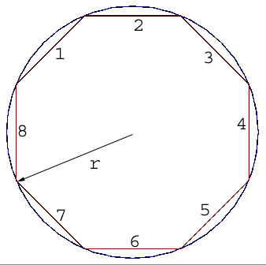

Brightness of Brain
Contest
Problem D
Time limit: 1 second Memory: 16 MB |
|
Polygon Inside A Circle |
The Problem
Consider a polygon of equal sides inside a circle as shown in
the figure below.

Figure: The regular polygon inside a circle
Given the radius of the circle and number of sides. You have to
find the area of the polygon.
The Input
In each line there will be two numbers indicating the radius `r' (0<r<20000) and the number
of sides of the polygon `n' (2<n<20000) respectively. Input is terminated by `EOF'.
The Output
Output the area in each line. The number must be rounded to the third digit after the
decimal point.
Sample
Input
2 2000
10 3000
Sample
Output
12.566
314.159
Suman Mahbub
Created: 12-09-2002
Updated: 14-12-2002
Idea: mAruf Hasan